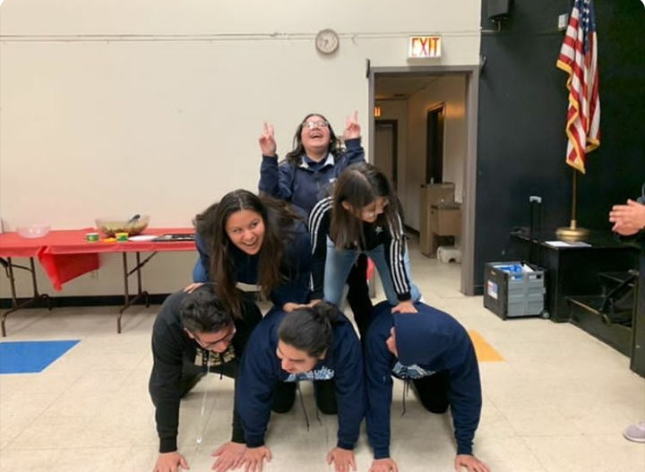
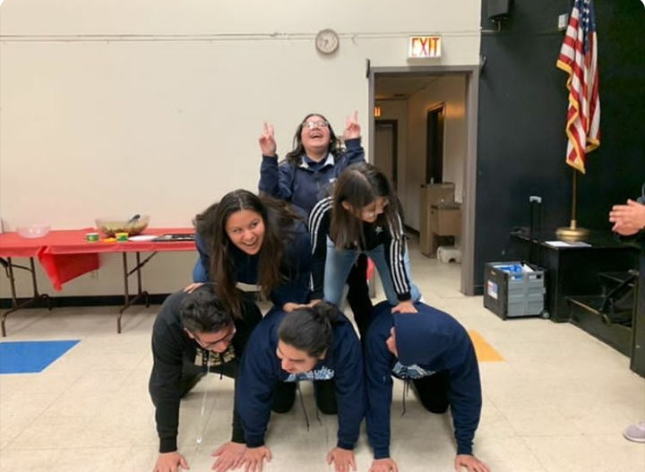

Luz Diaz
I am currently a second year student at the University of California, Riverside pursuing a degree in Business with a concentration in finance. When I first arrived at UC Riverside, I was pursuing a degree in philosophy; however after two semesters of pursuing a philosophy degree, I decided to change my major and join the various pre-business students studying to apply to the School of Business Administration here at UC Riverside. As a student, I hold myself accountable for all the assignments that I need to submit to my professors and refuse to let these difficult times be an excuse for poor quality work.Throughout my academic career, I ensure to uphold the university’s policy on academic honesty and accept the consequences of my work and time spent studying. In addition, I make sure to advocate for myself and my education by attending office hours and asking professors any questions I may have in order to fully understand the concepts that I am being taught.
The first time I had become interested in pursuing business as a major was when I was a freshman in high school. During this time, I had never seen a latina portray a successful business woman in any television series or movie. Even though I knew that there were latinas in the business workforce, I decided to become more informed on women in business and more specifically the amount of latinas in the business workforce. I found that women make up less than fifty percent of the people in the business workforce. I also found that of that percentage of women that are in the business labor force, only a small percentage of them are latinas. In addition, the higher up in the business work force you go, the less women you come across. This information motivated me to increase the percentage of women in the business workforce and to work hard so that there is more diversity amongst the women in the business workforce.
I am pursuing an education as a business major with the hopes of obtaining a degree with a concentration in finance. Although pursuing a career in finance can be stressful because you would be analyzing and monitoring an organization’s financial documents and assets, I believe that my experiences have helped prepare me for certain aspects a career in finance requires. For instance, working as a student election worker and as a minefaire agent have helped me develop some key skills such as leadership, communication, and problem solving as I had to work with various other agents to make sure that the attendees and the voters at the events were able to get the help that they needed. In addition, being a member of the Los Angeles Youth Leadership Council and prom committee helped me develop my organizational and communication skills while also allowing me to become more detail oriented as I had to help manage the budget of the prom and work in teams to get the work that needed to be done. During my time at UC Riverside, I hope to further develop the skills necessary for a career in finance.
Experience
Student Election Worker
• Responsible for signing in voters
• Clarified questions for voters
• Translated information and questions for voters
Member of Los Angeles Youth Leadership Council (LAYLC)
• Learned how to network
• Learned dining etiquette
• Learned how to efficiently work in teams
Minefaire Agent
• Helped attendees get to the various shows and play stations
• Managed various play stations
• Answered any questions the attendees may have had
Prom Committee
• Conducted surveys to voice the opinions of the senior class
• Helped manage the budget for the senior prom
• Helped MC the senior prom
Education
University of California Riverside
Portfolio


